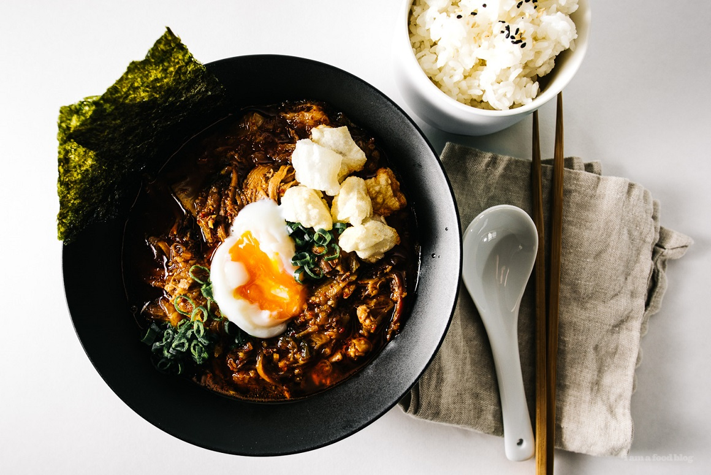
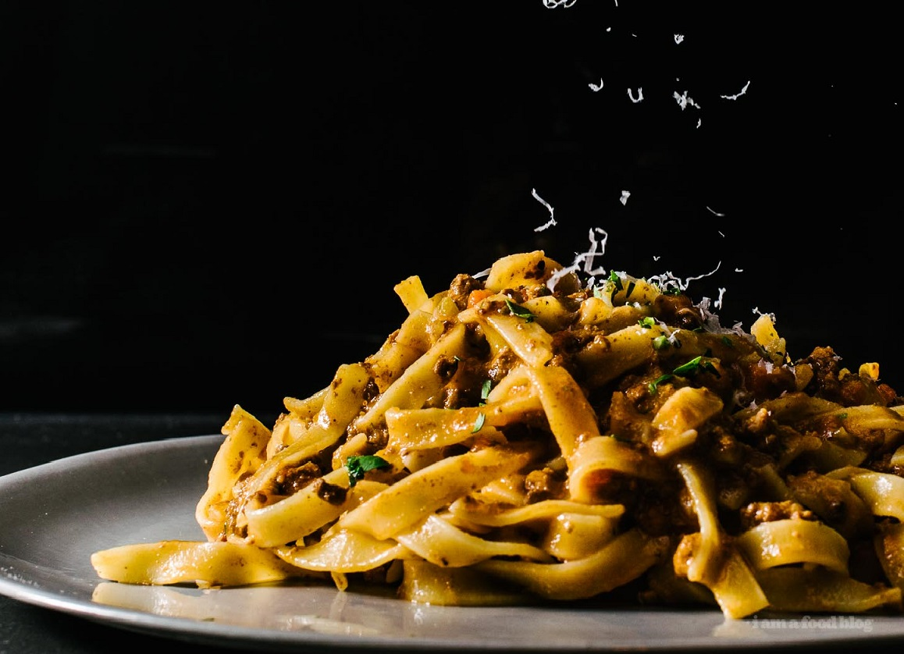
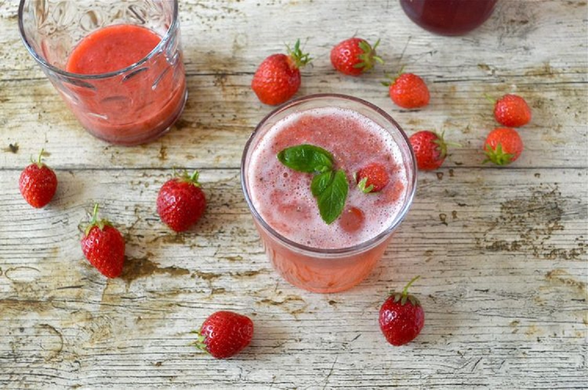

Kimchi Stew with Mochi and Egg Recipe
Making kimchi stew is one of my favorite things to do because it is incredibly easy, especially if you happen to have a bunch of leftover protein on hand. You can fancy it up if you like with a soft onsen egg and some crispy mochi bits but it tastes just as good with a bowl of plain white rice.
While David was editing these photos, he asked me: Is this recipe just take kimchi stew out of the fridge and heat it up? I laughed and said, YES! Okay, it’s not as easy as just taking a container out of the fridge, but making kimchi stew is one of my favorite things to do because it is, actually, incredibly easy, especially if you happen to have a bunch of leftover protein on hand. Essentially all it is, is: caramelized onions, a protein, kimchi, dashi, mirin, and some gochujang for spice.
You can fancy it up if you like, as I did here with a soft onsen egg and some crispy mochi bits, but it tastes just as good with a bowl of plain white rice. The funny thing is that I didn’t used to like kimchi at all, but then I cooked through the Momofuku cookbook and discovered that I love kimchi, particularly when it’s been cooked to mellow out all of the flavors. Make a big batch, store it in the fridge, and nom on it when you’re hungry. I love having ready made things in the fridge – it’s the best kind of instant food out there!

Bolognese Pasta Recipe
I’m a huge fan of bolognese sauce. So much so that Ira and I even went on a pilgrimage in Baguio. It was half in jest and half in complete and utter seriousness. I needed to taste bolognese sauce. Somehow I got it in my head that it would be the ultimate bolognese. I was planning on stuffing my face, 6 times over, eating all of the sauce I could possibly handle. Alas, it wasn’t so, because, spoiler: it wasn’t everything I dreamed it would be.
Don’t get me wrong, it was good, but it was missing something. And to be honest, I think that little something was that I was expecting it to taste like American bolognese, the kind that my non-existent Italian nonna in Little Italy in NYC would make on Sundays. The kind that reminded me of family, all of us, spilling out of the kitchen, into the living room, and out on the stoop, holding of giant bowls of steaming pah-sta topped with Sunday gravy, held precariously in our laps, a snow shower of fluffy parmesan adding the final touch. In my dreams, the pot of sauce would be never ending and there would always be meatballs.
Sadly, I don’t actually have any actual memories of Sunday sauce because that never happened, but part of me is forever searching for those cozy pasta feels. There’s something primal in me that just loves a good bowl of noodles. I’m always on the lookout for bolognese sauce recipes. I mean, often times, I’ll just wing it – after all, all good sauces start with the same base ingredients: soffrito (the holy trinity of onions, carrots, and celery), meat, stock, and tomatoes. For fun, I’ll do different combinations of meat, or alter the amount of tomato, sometimes going for a rich almost tomato-less gravy, sometimes opting for a very tomato heavy, meat-light version.
All sauce is good sauce, especially when you’ve been smelling it bubble away all day, while visions of pasta twirl in your head. But while all sauce is good, there can only be one that is the best. Whenever something is labeled as “the best,” I take it with a big pinch of salt. The best is so subjective – even who you’re eating with can change the way you feel about what you’re eating. But, with that in mind, I set out to make the Kenji Lopez-Alt, of Serious Eats and The Food Lab fame, best slow-cooked bolognese.
Kenji has a few tricks up his sleeve: using powdered gelatin to give the sauce a luxurious texture, stirring in blended chicken livers for an underlying earthy meatiness, and oven slow roasting for rich brown flavors and tender meat. He also stirs in cream and parmesan for a fully emulsified sauce. But, my favorite part of his recipe, and by no means any secret to me, is finishing with a healthy amount of fish sauce, which ups the umami and ties everything nicely together.
This recipe makes a lot of sauce, but if you’re going to go for it, you’ve got to go all in! Invite a bunch of people over, or just plan on eating sauce for the next couple of days. You could even freeze it for those times when you just need a hit of bolognese. Whatever you do, set aside a day to make sauce. It could be this recipe, or your own, whichever it is, I just know it will warm your soul.

Copycat In-N-Out Double Double Burger Recipe
If you’re a burger fan, like me, you’ll know that there’s a war brewing. The contenders: Shake Shack and In-N-Out. Where do you stand? I’m a huge fan of Shake Shack – their squishy buttery buns and smash and scrape patties are so delicious. So much so that I try to recreate them on the regular at home. But, the thing is, I feel like Shack Burgers are a treat, almost too buttery, kind of like the foie gras of burgers. In-N-Out, on the other hand, is the epitome of freshness.
With In-N-Out you get the crunch of iceberg lettuce, slices of onion, and a thick slice of tomato. Yes, Shake Shack has lettuce too, but it’s butter/Boston lettuce and the onions are missing. Is one better than the other? I could never choose! Instead, I’ll just enjoy both. Maybe even at the same time?
I will say this: I remember the first time I had In-N-Out I wasn’t blown away. I think I heard so much hype that I built them up in my head to be the best thing ever. Also, the fact that I’m not into In-N-Out fries may have influenced my opinion of the burger. Anyway, now I’m all about that California freshness. I especially love their protein style burgers, which are essential everything inside the bun, wrapped in big pieces of lettuce. It’s kind of like a handheld burger salad, and what could be better than that?
It’s pretty easy to recreate In-N-Out’s classic double double at home. You need: a noticeably toasted bun, two beef patties, two slices of American cheese, a thin-ish slice of a big onion, and a thick slice of a beefsteak tomato. A key feature of In-N-Out burgers are the onions. You can have them grilled, if that’s your jam, or you can go raw if you’re into fresh and spicy. Here I stuck to raw. I wanted to find a giant onion so that there was just one slice, like how they do it at In-N-Out, but I only had small onions in the fridge and I didn’t think a trip to the store for one large onion was justifiable.
But, what is totally justifiable is a trip to the store to get the ingredients to make these burgers. It’s grilling season friends! Sure, these burgers aren’t technically grilled, but I won’t tell if you won’t. Don’t forget to invite me, if your Memorial Day weekend barbecue includes these because, I’m there!

Strawberry Rose Mint Fizz – A Refreshing Summer Cooler
Summer is really here now. I know because it’s Wimbledon and it’s my birthday in a few days’ time. But not only that, it’s actually very warm and has been for a while. It’s important to remain hydrated in hot weather and having a few delicious drink recipes on hand helps. This strawberry rose mint fizz cooler recipe is ideal for the occasion.
When I’m really hot, I like to drink something that is sightly tart. I find a drop of apple cider vinegar in a glass of water works really well. More recently I’ve been using my kombucha vinegar to the same effect. It’s always nice to ring the changes though and to have something special on hand for guests or visitors. When I saw this post for raspberry and mint frosé over at Feeding Boys, it made me so thirsty, I immediately rushed off to create this strawberry rose mint fizz cooler.
My strawberry rose mint fizz isn’t alcoholic. Everyone, including children can drink this in complete confidence. However, if the desire is there, a slug of gin would make a very nice addition. It’s simple and quick to make and very refreshing. The strawberry hit is as good as a Wimbledon grand slam – it’s delightful with subtle undertones of fragrant rose, fresh mint and cooling ice. I’m just glad it’s not me on Centre Court.
I make my own rose syrup. It’s very easy if you have access to unsprayed deep scented roses. I used my fabulous Optimum G2.3 induction blender which blitzed the strawberries, mint and ice in seconds.